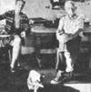

Helen and Scott Nearing are light-years ahead of most of us when it comes to living a life of voluntary simplicity in harmony with nature. Back in 1932 they began homesteading a run-down farm in Vermont's Green Mountains, and later-when the slopes around them exploded into ski resorts in the early 50's-Helen and Scott moved to a rocky inlet on the Maine coast . . . and started all over again.
That's where you'll find the Nearings today: They're still clearing brush, still building the stone structures they're famous for, and still raising most of their vegetarian diet themselves in productive wholistic gardens . . . just as they've been doing for 50 years.
Naturally, the Nearings have learned a good deal about homesteading over the years . . . and they've agreed to share that knowledge with MOTHER's readers in a regular question-and-answer column. Send your queries about self-reliant living on the land to Helen and Scott Nearing, THE Mother Earth News(restricted), P. O. Box 70, Hendersonville, North Carolina 28791. Please don't expect personal replies, though. The most frequently asked questions will be answered here-and here only-so that we can all benefit from what the Nearings have to say.
- - - - - - - - - - -
I've enjoyed reading your column in each issue of THE Mother Earth News(restricted) . . . and was especially interested in the pest control method you described in No. 72. In that issue, you said that you use a fine-mesh nylon net over your spread of 200 cultivated blueberry plants to keep birds from devouring the crop. Well, this summer I'm watching out for 1,000 berry-bearing plants, and I'd sure appreciate some more information on how to protect them. Could you tell me, then, the exact size and mesh specifications of your net, and where such a bird barrier can be purchased?
Initially we draped a fine tobacco cloth over each bush to keep the birds away. However, we quickly found this tactic to be far too labor-intensive, since we had to remove the covers when any of the fruit was ripe for picking and then put them back. We also found that berries, leaves, and twigs were continually getting stuck in the mesh, making the harvesting chore even more troublesome. So, as the bushes reached heights of six feet and taller, we switched to a more manageable net-and-pole setup. We purchased large irregular pieces of secondhand Japanese fishing net-ranging in size from 50 to 100 feet on a side-through a Massachusetts firm (Charles Belsky, Dept. TMEN, 532 Main Street, Holyoke, Massachusetts 01040). We then cut the one-inch nylon mesh into convenient blocks, devised a pole-and-wire grid that spanned the entire quarter-acre blueberry patch, and sewed the net sections together to create a continuous barrier. The poles we use measure 8 feet high and are placed 16 feet apart.
Admittedly, it's quite a job to set the nets up and then take the whole apparatus apart after the season ends . . . but the annual removal is necessary to prevent snow and ice damage. In other areas of the country, of course-where the winters are less severe-a similar arrangement could probably be left standing year round.
- - - - - - - - - - -
I'm interested in installing a Swedish toilet-such as the one you mentioned in MOTHER NO. 73-in my home. All of the models that I've investigated are run by electricity, but I understand that your facility doesn't require electrical power for its operation. Please set me straight as to how your composting commode works, and-if you would-tell me where I can write for more information about the "earth closets".
You're right . . . the organic waste treatment system we use does not require electricity. We simply feed human refuse and vegetable scraps into the Swedish toilet, and it supplies us with excellent compost and loads of earthworms for our garden. If you're interested in setting up an earth closet similar to ours, we suggest that you write to the folks at Clivus Multrum USA (Dept. TMEN, 14A Eliot Street, Cambridge, Massachusetts 02138) for more information.
- - - - - - - - - - -
Although I try my best to live an energy-conscious, self-reliant life, I've yet to make the final step and move my family out to the country. The main reason for my hesitation is that a lack of financial and medical security seems to go hand in hand with the back-to-the-land option. What steps have you taken-or do you suggest other cash-lacking homestead hopefuls take-to provide for emergency medical expenses and "retirement" when (if ever!) you are unable to keep up with the physical demands of your lifestyle?
Like you, we feel that some form of emergency backup system is necessary . . . however, we try to keep our dependence on outside help to a bare minimum. We've always carried a low-cost accident insurance policy (ours runs only $15 annually, from the Commercial Travelers Mutual in Utica, New York) which takes care of the occasional sprained ankles, broken arms, cut fingers, and the like that invariably occur when we're working on and around the farm. In the past 50 years we've required the attention of a physician only for those emergencies. Otherwise, we try to follow the preventive approach to medicine . . . by keeping our bodies healthy and in good trim while living in harmony with the land and eating simply. We also advocate wise and deliberate living, for-as the old adage puts it-"they stumble who run fast".
- - - - - - - - - - -
Have you ever attempted to produce your own electricity by using a windplant? Do you consider energy self-sufficiency practical for the rural homesteader?
No, we don't use a windplant to provide our power. Electricity had only just been put in along the country road running past our Maine farm when we bought this land. A wind generator would have cost us thousands of dollars, while we were able to hook up with the powerline for a scant $35.
In many cases energy self-sufficiency isn't the most practical and economical way to run a modern-day homestead, although in some instances-of course-it's still a viable option.
- - - - - - - - - - -
We're planning to build a slip-form stone house on our acreage in the Missouri Ozarks. You describe, in Living the Good Life, several features of your Vermont home that were apparently not incorporated into the house design in Maine . . . including a stone floor, a sauna, and a fireplace in each room. Why were these items omitted from your "new" home?
We'd like to know, too, what roofing materials you recommend for a stone house.
We do have stone floors in our house in Maine . . . in the living room, in a bedroom/study, in a garage/workshop area, and in a storage room. As for the sauna, our location on Penobscot Bay boasts a saltwater cove in front of the house that serves as a second bathtub (it is cold, though!). We're still collecting rocks from around our homestead, however, and we just might build a new sauna in the near future.
Fireplaces were omitted from the design of our present home for energy conservation reasons. Although we do like the looks (and luxury) of an open fire, we consider fireplaces heat-wasters . . . and thus we opted not to have any in our Maine house. Instead, we installed a large Franklin stove that we open up and enjoy during the warmer months. Then-from October to May-we heat our home with an efficient Free-Flow brand barrelshaped stove (this woodburner can also be operated "open" to allow fireviewing).
In regard to your last question, we've roofed all our stone buildings with metal . . . galvanized iron in Vermont and aluminum here in Maine. Both of the materials are long-lasting and fireproof, so they help us keep our insurance rates low. We painted the metal a dull green in Vermont, and our Maine house sports a quiet brown roof.
|
 |
|
|